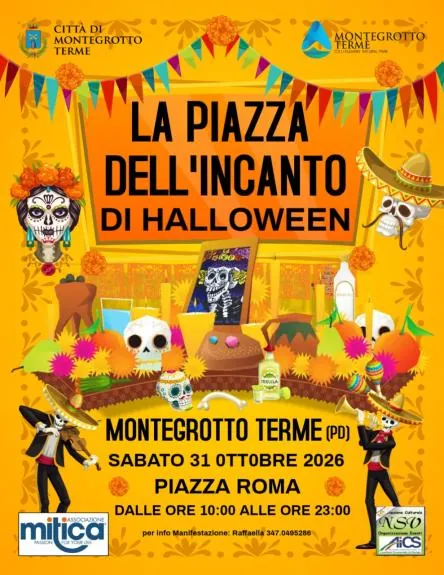

sab 31 ott
La Piazza del'Incanto di Halloween
L'Associazione Culturale NSV Organizzazione Eventi APS affiliata A.I.C.S. - Comitato Provinciale di Rovigo, in collaborazione con L'Associazione Mi.Ti.Ca. promuove ed organizza la terza edizione della Manifestazione "La Piazza dell'Incanto di Halloween" che si svolgerà Sabato 31…
 Indicazioni
Indicazioni
- Costi e prenotazioni
- Costo non indicato · Prenotazione non indicata
- Programma
- Programma da verificare. Apri la fonte ufficiale per orari e possibili aggiornamenti.
- In caso di maltempo
- Nessuna indicazione specifica pubblicata.
- Note
- Acquisito automaticamente dalla fonte.
L’EVENTO
Descrizione completa
L'Associazione Culturale NSV Organizzazione Eventi APS affiliata A.I.C.S. - Comitato Provinciale di Rovigo, in collaborazione con L'Associazione Mi.Ti.Ca. promuove ed organizza la terza edizione della Manifestazione "La Piazza dell'Incanto di Halloween" che si svolgerà Sabato 31 Ottobre 2026 a Montegrotto Terme (PD), in Piazza Roma dalle ore 10:00 alle ore 23:00.
Piazza Roma, addobbata per l'occasione a tema "Dia de Los Muertos", accoglierà chi vorrà partecipare truccato o vestito con costumi e maschere caratteristiche di Halloween per festeggiare con le proposte artistiche di seguito elencate:
Dalle ore 10:00: "Il Bazar delle Streghe e dei Druidi": Mercatino magico tra Esoterismo, Filosofie Olistiche, Artigianato Creativo, Leccornie Dolci e Salate per tutti i gusti.
Dalle ore 15:00: Spettacoli e Animazione a tema "Dia de Los Muertos" con quattro Ballerine Calaveras presenti per fotografie e interazione con il pubblico; performance con Farfalle Luminose LED e, a seguire, una performance di danze mozzafiato e manipolazioni scintillanti.
Spettacoli di Magia comica e interattiva in compagnia di "Mr. Mariachi Show" in cui il pubblico di tutte le età diventa protagonista attraverso giochi, sorprese e momenti di comicità.
"Orosonoro" Duo Musicale con Musica d’intrattenimento durante il pomeriggio. In serata, il Live del duo porterà energia e coinvolgimento con un repertorio pop-dance dagli anni 60’ alle hit contemporanee, pensato per ballare e cantare.
"Face&Bodypainter Viviana" con pennelli e colori trasformerà visi e corpi in creature mostruosamente divertenti.
Per info Manifestazione e partecipazione come Espositore al Bazar delle Streghe e dei Druidi: Raffaella 347.0495286
Email: nsv.eventi@gmail.com
https://www.facebook.com/NsvOrganizzazioneEventi
IL PROGRAMMA
Programma e orari
Appuntamenti raccolti dalle fonti elencate. Dove manca un orario, non è ancora disponibile in questa scheda.
Programma pubblicato
- Dal 2026-10-31 al 2026-10-31
INFORMAZIONI UTILI
Prima di partire
- Controllare la fonte prima di partire.
ORGANIZZAZIONE